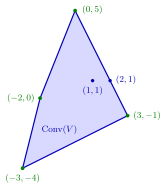

Convex Hull¶
Definition¶
Let . The convex hull of is the intersection of all convex sets that contain :
It is characterized completely by two properties: (a) is convex and ; (b) every convex set with satisfies .
Interpretation¶
The convex hull is the smallest convex set containing : it fills in every dent and gap of and nothing more. For finitely many points in the plane, picture a rubber band stretched around them and released; the region it encloses is the hull.

The figure draws Example 1. The four points , , and , drawn in green, are the corners of . The other two points of add nothing: lies on an edge and lies inside, so the rubber band around the six points touches only four of them.
The definition describes from outside. The family being intersected is never empty, because itself is a convex superset, and the result is convex because any intersection of convex sets is convex. The main theorem on convex hulls describes it from inside: for nonempty , is the set of all convex combinations of points of , each using finitely many points. The inside view proves membership: exhibit nonnegative weights summing to . The outside view proves non-membership: find one convex set, for example a halfspace, that contains but not the point.
By property (b), is convex exactly when , and implies . Some properties of carry over: if lies in a ball, so does , because the ball is convex. Closedness does not carry over (Example 4 below).
A common misconception is that every point of is a corner of . In Example 1 below only four of the six points are corners; one lies on an edge and one inside. Also, the weights representing a point of the hull are usually not unique. Later in the course every nonempty compact convex set is recovered as the convex hull of its extreme points, its corner points, a precise version of the rubber-band picture.
Key Results¶
- is convex, contains , and is contained in every convex set that contains (the definition and properties (a)–(b)).
- is convex if and only if .
- For every nonempty , is the set of all convex combinations with , , and .
- The set of all convex combinations of points of is convex, because a convex combination of two convex combinations of points of is again one; this is the key step in proving the previous result.
- If , then , by property (b) applied to the convex set .
Examples¶
1. Six points. Let . By the description from inside, consists of all with and . The figure above shows a quadrilateral with corners , , and . The point lies on the edge from to , and lies inside. The latter has other representations too, such as the trivial one .
2. Two overlapping discs. For and the union is not convex. Its hull consists of the points with on the segment from to and : the open "stadium" of points at distance less than from that segment. Indeed, grouping the points from each disc (both discs are convex), a point of the hull is with and , which has this form with , and conversely for . For example lies in the hull, although its distance to both centres is .
3. The circle and the disc. Let , which is not convex. The closed disc is convex and contains , so lies inside it. Conversely, a point with and satisfies , a convex combination of two points of the circle, and . Hence is the closed unit disc.
4. A closed set with a non-closed hull. Let , a point and a line, which is closed. A convex combination of points of has second coordinate equal to the total weight on the line, a number in , and if that weight is the point is . Conversely for . So . The points lie in it and converge to , which does not, so is not closed.
Prerequisites¶
Related Concepts¶
- Polyhedral Convex Set
- Interior and Closure of a Convex Set
- Corner Point
- Extreme Point
- Convex Hull of Extreme Points
- Finitely Generated Convex Cone
- Optima at Extreme Points
Sources¶
- Math VI: Convexity and Optimization · Week 1
- H. E. Nusse and M. Dienstknecht, Math VI: Convexity and Optimization, lecture notes 2026–2027, Section 1.1
Aliases: Conv(V), convex hull of a set, convex envelope of a set Keywords: \operatorname{Conv}(V), \operatorname{Conv}(V)=\bigcap{S\subseteq\mathbb{R}^n\colon S\text{ convex},\ V\subseteq S}, smallest convex set containing V, all convex combinations of points of V, V\text{ convex}\iff V=\operatorname{Conv}(V) Symbols: element of, lambda, real numbers, square root, subset, sum, union
Last updated: 5 November 2026 12:47
Convex HullConvex Hull of Extreme PointsConvex CombinationIntersection and Sum of Convex SetsConvex Set in R^nPolyhedral Convex SetInterior and Closure of a Convex SetCorner PointExtreme PointFinitely Generated Convex ConeOptima at Extreme Points